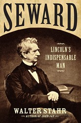

|
I read somewhere, not long before my first book was published, that being a published
author would ruin the experience of going to a bookstore. I scoffed, but I soon learned
that it was all too true. A bookstore will have no copy of your precious baby. Or it will
have one or two copies, buried so deep in the back that nobody will see them. Or the store
has a few copies well-placed, but nobody seems to be paying any attention to your book,
much less buying it.
I fear that being the author of a new biography on William Henry Seward, a book that
|

Seward: Lincoln's Indispensable Man,
by Walter Stahr
|
deals with the first few months of 1865, similarly ruins the experience of Steven
Spielberg's new movie on Abraham Lincoln, depicting the same months. As I sat in the
theater, I found myself at every turn noting minor errors.
Many were points of vocabulary or procedure. Lincoln did not call his friend "William"
or "Secretary Seward"; he called him "Governor." People did not refer, in January 1865, to
the "Thirteenth Amendment," because they did not know it would ultimately have that
number; they talked about the "slavery amendment." Members of the House of Representatives
did not address one another directly, much less cross-examine one another; they addressed
their comments to the Speaker, as they do today. Voting in the House did not proceed by
state; it proceeded in alphabetical order.
There were also chronological problems. The three Confederate peace commissioners did
not pass through the Union lines in mid-January; they were not even named until late in
the month. Grant did send a telegraph to Washington, urging Lincoln and Seward to meet the
commissioners, but that message was sent after the House vote, not weeks before, as in the
movie.
More serious perhaps were points of plausibility. Would Lincoln really have spoken with
|
David Strathairn as William H. Seward
|
Elizabeth Keckley, his wife's black seamstress, to ask her about post-war plans? I doubt
it. Would Lincoln really have joined Seward in visiting the shady lobbyists to discuss
how to pressure the last few representatives? I doubt it.
All these points, however, are quibbles. Spielberg has made a great movie about
Lincoln, Seward, the Thirteenth Amendment, the Civil War. With very few exceptions, the
actors look like and act like the characters they portray; David Strathairn has Seward
completely captured.
Even more persuasive are the relationships between the characters. We experience the
interplay between Lincoln and Seward, how Seward could disagree with Lincoln yet serve as
his most effective instrument. We see how the two men pursued their great goals, ending
the Civil War and ending slavery, and how they were prepared to cut some corners to reach
their goals. Spielberg and the actors make history alive in a way in which no author,
however gifted, could with mere words.
So in the end I am left not with concerns but with gratitude: To Spielberg for making
this movie, and to my fellow moviegoers, for only when movies succeed will others make
similar movies in the future.
Source: Walter Stahr in the Wall Street Journal (November 30, 2012).
|